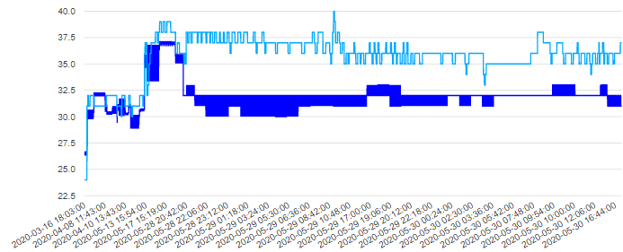
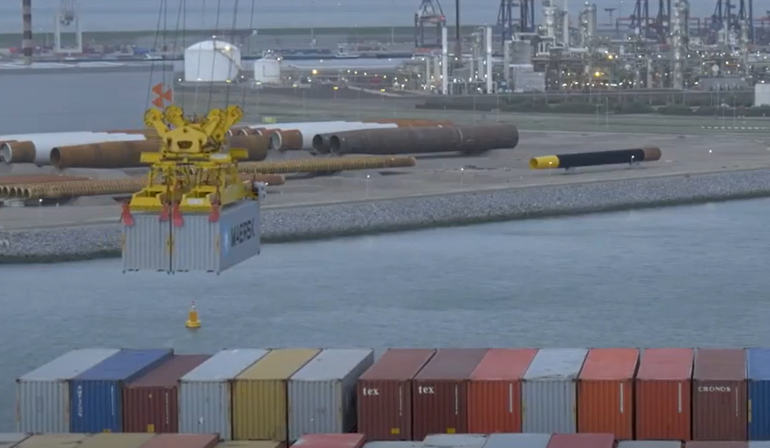
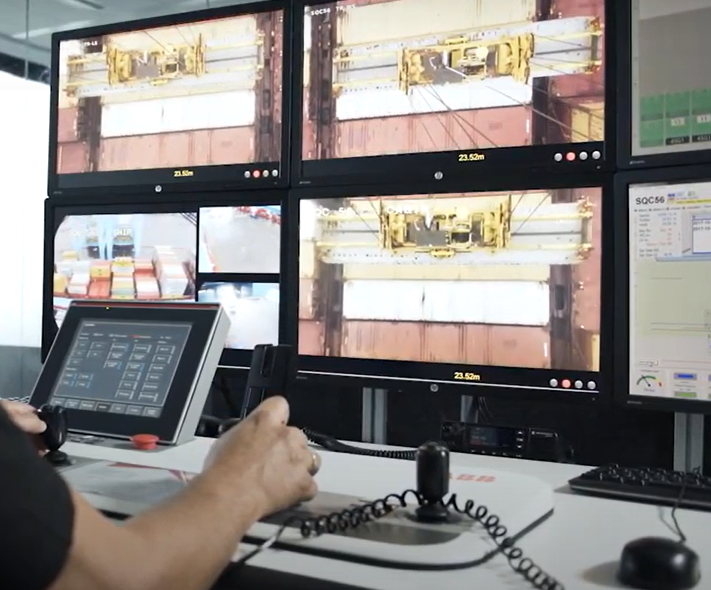

AI is like a smart assistant that can scrutinize this mountain of project data and alert project managers about the critical things that need their attention and also highlight easy levers to pull to improve outcomes
Project schedule optimization

AI can help fill the shortage of construction workers
Sensors help prevent idle time by monitoring the location and status of construction equipment
AI helps manage cash flow by monitoring the construction materials supply chain
Sensors can help manage materials,
for example, they help optimize concrete curing times
Sensors provide better situational
to reduce waste, emissions, and noise
Predictive maintenance

Tracking defects can help forecast project risk
Monitoring equipment and materials can limit downtime by reducing inspections

Devices such as the autonomous crane are safer because they can be monitored by crane operators from an office
